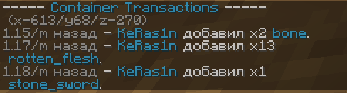

Долой приваты! Но как жить без них? В любом случае будут недобросовестные игроки. Выход есть и это - CoreProtect.
Что если я скажу вам что есть плагин который логирует абсолютно все изменения блоков, в каждом чанке, все изменения сундуков, кто что взял и положил, и что не мало важно, когда.
И что введя одну лишь команду можно вернуть, откатить все события в определёном радиусе, хоть на 30 дней назад. Как будто ничего и не было.
Как использовать?
Теперь каждый игрок может использовать инспектор для обнаружения гриферов. Конечно, самому наводить правосудие не надо, лучше написать в
специальный канал в дискорде.
История предметов
Введите
/co i, для активации/деактивации инспектора.
Теперь если нажать
ПКМ по сундуку (шалкеру, печке и тд.), в чате инспектор отобразит изменения и перемещения предметов в нём, и временем когда это было сделано. На нашем сервере Инспектор был переведен на русский дабы не возникало затруднений.

История блоков
В режиме
/co i по нажатию
ЛКМ можно также смотреть историю блоков, кто сюда что ставил и ломал.